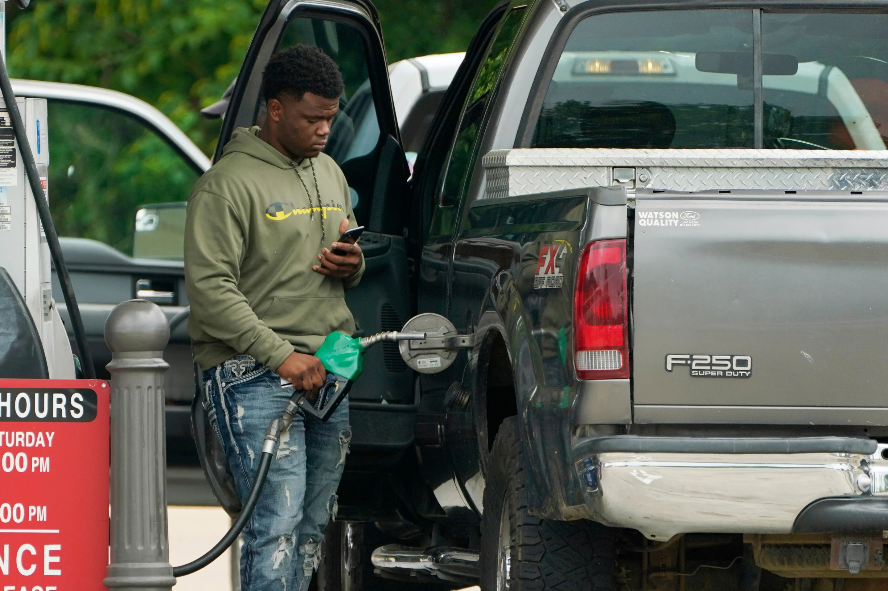

Monday, June 29, 2026
LIVE 7hrs ago
Gas prices move up and down in response to disruptions in supply and spikes in demand. Many global events such as conflicts, sanctions or decisions by major oil producing countries can limit or create uncertainty about the supply of oil.


NEW YORK — According to business executives and retail analysts, American consumers have not ceased spending money since the war in Iran raised fuel prices, but many are reconsidering what they buy and where.
So far, only minor behavioral changes have been noted, such as different gas-buying patterns and fewer trips to apparel and furniture stores. Additionally, they vary among the populace. Executives at American mainstays like Walmart, McDonald's, and Dollar General mentioned both overall consumer resiliency and discernible cuts by lower-income customers during recent earnings calls with analysts.
However, some economists and analysts believe they will witness a broader retrenchment when the generous income tax refunds are gone and consumers have to deal with the cumulative impact of higher gas prices as well as higher prices for food, clothing, insurance, and other goods and services. This is due to the new signs of strain mentioned by major retailers as generous income tax refunds helped shore up their sales.
Trevor Chapman, a communications executive in West Hills, California, stated that he and his spouse now schedule their fuel trips near Costco locations that have gas stations rather than visiting a nearby independent gas station. According to him, the couple is also shopping for food more online in order to prevent impulsive purchases.
According to Chapman, "gas is a kind of catalyst." It permeates the whole budget. We're making every effort to maintain the status quo. However, it seems like everything's piling up more and more.
Fatigued by years of unrelenting inflation and levies on imported goods imposed last year, many customers were already being pickier with their discretionary purchases long before the United States and Israel started the war.
The U.S. Commerce Department revealed last week that the majority of the increase in American spending in April, when a crucial inflation indicator hit its highest level since October 2023, was due to higher prices rather than increased purchases.
Topping off rather than filling up Since the start of the conflict in late February, members-only warehouse stores like Costco, Walmart's Sam's Club, and BJ's Wholesale Club have reported increased fuel pump traffic. The wholesale clubs usually have lower fuel prices.
However, John David Rainey, the chief financial officer of Walmart, told analysts late last month that many truckers are not filling up their tanks. According to him, Sam's Club members and Walmart patrons are purchasing an average of fewer than 10 gallons every trip for the first time since 2022.
Rainey remarked, "That's a sign of stress."
Members of Costco are also changing. Chief Financial Officer Gary Millerchip stated in late May that they are going to store gas stations more often to "top up in between what would have normally been a gap between getting the tank to empty because of the concern about what might be the gas price tomorrow."
According to Jeff Lenard, vice president of the National Association of Convenience Stores, convenience stores, which sell 80% of all fuel in the United States, have been negatively impacted by the increase in gas prices.
The number of pump transactions at the locations of 130 convenience store operators decreased by about 10% in March and April compared to the same two months last year, according to a sales analysis conducted by the trade organization. The data shows that sales within the companies' outlets decreased by 10.4%.
Lenard stated, "You lose in-store sales when you lose gallons to the big box."
Modifying one's dietary patterns During the first two months of the conflict with Iran, many Americans continued to eat out despite rising petrol prices. According to the National Restaurant Association, tax refunds were beneficial. According to market research firm Circana, restaurant expenditure increased by 2.6% in April, mostly due to increasing menu prices, but customer traffic at U.S. restaurants remained steady from the same month last year.
However, as budget-conscious Americans bear the combined burden of paying more for petrol and other consumer products in addition to rising prices in other sectors due to previous and current inflation, cracks are beginning to appear.
McDonald's Chairman and CEO Chris Kempczinski stated last month that the cost of gas won't encourage consumers with family incomes of $45,000 or less to return to American fast-food establishments. Following the period of inflation that followed the conclusion of the COVID-19 pandemic, people in that income category started cutting back on their fast-food purchases; last year, the tendency accelerated.
According to Chief Research Officer Sebastián Fernandez, the U.S.-based restaurant consulting firm Revenue Management Solutions examined 14.6 billion restaurant transactions over the previous four years and discovered that restaurant visits gradually decrease as gas prices rise. According to the data, the impact doubles when petrol prices reach $4, which was the average for the country on March 31.
According to Stew Leonard, president of Stew Leonard's, an eight-store supermarket business his father started, consumers are also making compromises when they buy for food. He has observed that consumers are less inclined to purchase the goods displayed during live culinary demonstrations or supplied for sampling, and they are purchasing meat in large quantities to freeze.
Leonard remarked, "It's telling me that people are sticking more to their shopping list."
Todd Vasos, CEO of Dollar General, also mentioned $4 a gallon gas as a tipping point that attracted more customers with household incomes over $100,000. Many of Dollar General's primary customers, who reside in rural areas and have mid-to-low incomes, were cutting back on their food expenditures, Vasos told investors on Tuesday.
La Grange, Kentucky resident Sophie Tolsdorf, 29, stated that she is among the buyers who stockpile meat when the price is affordable. She also reduced the amount of rawhide bones she bought for her dog, which cost $40 per pack, and began purchasing whole fruit rather than precut fruit in containers.
Tolsdorf remarked, "He might have noticed." "He is undoubtedly a little bored now during the workday."
Wants versus needs Retailers had highlighted customer caution and selectivity as factors that could affect sales of non-essential products over several earnings seasons before to the war. According to Marshal Cohen, chief retail advisor at Circana, consumers seem to have reduced their discretionary spending even more when petrol prices increased.
According to Cohen, U.S. retailers sold 6% fewer non-grocery items between April 25 and May 23 than they did during the same four-week period in 2025. The largest decreases, ranging from 5% to 7%, were seen in housewares, apparel, footwear, and sporting goods. Toys and cosmetics continued to be popular categories, with at least an 8% rise in sales, according to Circana.
According to R.J. Hottovy, head of analytical research at Placer.ai, a location intelligence company that tracks people's movements based on cellphone usage, visits to the gas stations of BJ's, Costco, and Sam's Club stores began to accelerate in early March, coinciding with a sharp increase in fuel prices.
According to Placer.ai's statistics, foot traffic at clothes, electronics, and home furnishings businesses decreased for four weeks in a row by the beginning of May, while grocery and dollar stores saw an increase.
According to Hottovy, "value-oriented retailers like warehouse clubs, superstores, and off-price chains are being prioritized by consumers."